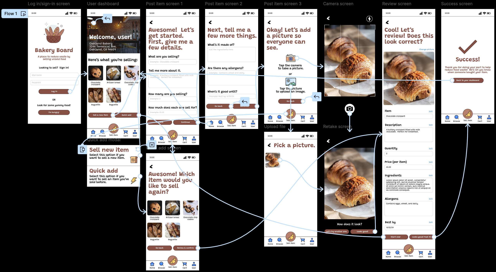
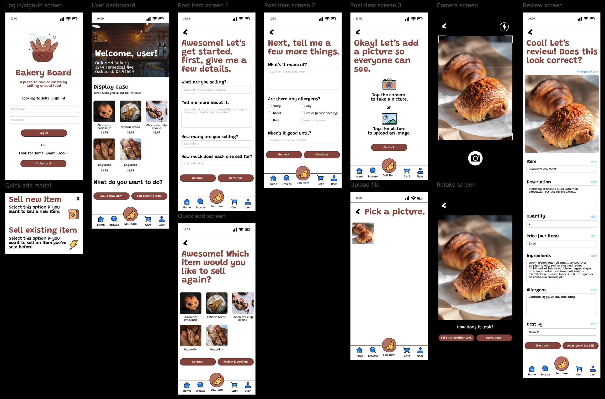

Weather platform redesign
Reimagining onboarding, navigation, and forecasting tools to create a seamless weather experience across desktop, tablet, mobile, and wearable devices
Overview
- Team: 2 designers
- Role: Product designer
- Duration: 6 weeks
WeatherTrends360 helps businesses make proactive decisions using long-range weather forecasting. Business can better prepare for seasonal trends and reduce the impact of weather-related uncertainty by using year-ahead weather data and business insights. As part of an ongoing product redesign, I collaborated with another designer to improve the user experience across onboarding, navigation, dashboards, weather maps, and responsive interfaces.
Problem
The Weather Trends platform contains a wide range of forecasting tools and data visualizations, making it essential for users to quickly understand the product, navigate complex features, and customize the information most relevant to them. The redesign aimed to improve usability, create a more cohesive experience across devices, and help new users discover the platform's value more effectively.
Goal
Create designs that simplified new user onboarding, improved navigation, and allowed for a user to customize the information most important to them and create a cohesive experience across various devices.
User onboarding
New users needed an easy way to create an account while quickly understanding the value of WeatherTrend’s year-long weather forecasting. My primary focus was creating the user onboarding flow screens from low-fidelity wireframes and incorporating their AI, Sunny, into the designs. Screens included account creation, early value, password recovery, and an interests selection screen to quickly customize a user’s experience.
AI onboarding vs. a traditional form
While brainstorming how the user onboarding flow could go, AI was mentioned as a possible solution. Given that AI is widely available, it seemed like it was worth exploring. Before creating designs, I asked a few people their opinions regarding using AI to create their account. Here are some of the insights I gathered:
- Security concerns: users don’t know how data is being used, data is stored and used to train future models and information could reappear in answer to others; human contractors may review conversations to improve the AI and may see sensitive info. AI might not know what information needs to be kept secret.
- More friction: on a mobile phone keyboard, users are more likely to make a mistake and if you make a mistake, you’ll have to enter a conversation with AI to fix (as opposed to just fixing it yourself in a form); user might not catch typos if they’re having a conversation with AI and the chat is scrolling or autocorrect happens and a user doesn’t notice.
- Forms are standard: users know what to do when they see a form and ideally how it behaves; a form is already very simple; having AI do it make something simple more complicated.
Improving navigation
One of the key features for WeatherTrends360’s app, is Sunny, their AI assistant. When designing the left drawer for navigation, it was important to provide the user with easy access to their chat history as well as information regarding their AI usage. To better show the user’s usage, I utilized different indicators, including color, a meter, and numbers.
Responsive experiences
The first usability study was conducted to determine if users can easily post an item using the app, if the “Quick add” feature saves the user time, determine what elements worked well, and identify any opportunities for improvement. Following the usability study, I created an affinity diagram in order to determine patterns, themes, and insights. Any findings were then used to create high-fidelity mockups.
- Type: Moderated
- Location: United States, remote
- Participants: 5 participants
- Length: 30-45 minutes
Findings
- Adding an item: Users were confused by the options regarding selling an item.
- Font size: The small font size, especially in the bottom navbar made it difficult to read.
- Homepage: Users were confused by the function of the homepage.
I wasn’t entirely sure that ‘add new item’ would be how you would sell an item. The wording on it makes it seem like it could be for anything. I could be adding something to my cart, selling an item, or adding an item in the future that i might sell down the line.
- Participant B
The homepage was confusing...my confusion may be just because I don’t see enough.
- Participant C
Weather maps and controls
High-fidelity mockups
What I focused on
- Readability: Ensuring that all users are able to easily ready basic text.
- Clearer language: Providing a short description so users know what a certain feature will do.
- Homepage: Revising the homepage to make it easy for users to quickly see what they're selling and to add items to sell.
- Responsive design: Translating the app experience into a website.
Readability
During usability testing, one of the participants mentioned that even with their glasses, they had trouble reading the font in the bottom navbar. I increased the size of the font to make it easier to read and navigate the app.
Clearer language
To make selling a new item more clear, I revised the language of the buttons and the modal. I also added a short explanation for the options in the modal.
Homepage
for the homepage, instead of a list of bakeries (which was aimed towards users who were buying), I used the user dashboard as the homepage, keeping my user, the seller, in mind.
Responsive design
When creating the complementary responsive website for this app, I decided to add a large image on the left side of the screen and the elements to interact with on the right side. I thought this was a great way to utilize the larger area while also keeping the user focused on the task at hand.
High-fidelity prototype #1
After conducting the first usability study, I refined the designs and created a high-fidelity prototype, implementing what I learned from the first usability study. The user flow included clearer language and larger font. It also follows the same user flow as the low-fidelity prototype.
Try the website prototype Try the mobile prototype
Providing historical data
For the second usability study, participants were asked to perform tasks using the mobile high-fidelity prototype. This usability study was conducted to determine if the implemented changes made it easier for a user to post an item on the platform, determine what elements worked well, and identify any opportunities for refining the design. It also was conducted to determine if the new sequential user flow for posting an item makes the posting process easier. An affinity diagram was created to determine patterns, themes, and insights, which were then used to further refine the design.
- Type: Moderated
- Location: United States, remote
- Participants: 5 participants
- Length: 30-45 minutes
Findings
- User dashboard: Users were confused by the options regarding selling an item.
- Navigation: Users were confused in some way by the navigation.
- Quick add: The “Quick add” feature isn’t clear to some users.
- Branding and theme: The color scheme and theme appeals to users.
I got a little confused on ‘Quick add’ [button] and ‘Sell a new item’ [button]. Once I clicked on both, I understood the difference…
- Participant D
the 'User dashboard' screen…I thought I could click on one of those pictures to sell that item again.
- Participant A [referring to some challenges faced]
I like the branding and the illustrations and the theme of the color.
- Participant E
More refinement
Improved high-fidelity mockups

What I focused on
- User dashboard: Making the dashboard's purpose more apparent to users.
- Easier navigation: Ensuring that the app flows smoothly when selling items.
- Quick add feature: Eliminating confusion regarding what this feature is.
User dashboard
I revised the user dashboard to include clearer language so its function is more obvious to users.
Easier navigation
I revised certain buttons to allow for easier navigation and so navigation flows more logically. The "Start over" button now goes to the user dashboard screen instead of the form.
Quick add feature
I changed the wording for the quick add feature in the modal and on the button to make it easier for a user to understand.
Final high-fidelity prototype
The final prototype incorporated the findings from the last usability study. Clearer language and easier navigation now makes it easier for bakers to quickly add items to sell.
Final website prototype Final mobile prototypeMoving forward
Overall, users thought the app was straightforward, easy to use and navigate, and visually pleasing with a nice user interface.

Takeaways
- What I learned: Throughout this project I learned the importance of using a persona. I had two user journeys that were very similar, but with the personas in mind, it helped me focus on creating the design for the app. I also learned about the importance of different perspectives. I had participants who weren’t as technologically proficient, but still provided very useful feedback.
- Next steps: If I had more time, I'd do the following: Conduct a usability study using the desktop screen size prototype to ensure users are able to complete the user flow on a website, as opposed to on an app; Add in some of the features participants recommended to determine if they indeed improve the current user flows; and introduce a new user flow that will allow users to buy products and conducting usability studies for this new user flow.
Final designs
Thank you!
Thank you for taking the time to go through this case study. If you’d like to learn more or want to connect with me, my email and LinkedIn are listed below:
- Email: gscalica@gmail.com
- LinkedIn: Guillermo's LinkedIn